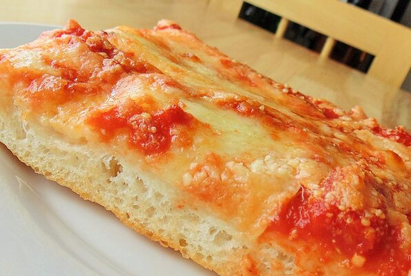

Pizza

a very tasty looing pizza
ingredients
- warm warter
- bread flour
- olive oil
Steps
- Combine water and yeast in a small bowl. Let stand until yeast softens and begins to form a creamy foam, about 5 minutes.
- Combine flour and salt together in the bowl of a stand mixer fitted with a dough hook attachment. Pour in yeast mixture. Knead dough until smooth, about 7 minutes.
- Grease a large bowl lightly with olive oil. Form dough into a tight ball and lightly grease the top. Place in the bowl; cover loosely with plastic wrap. Let rise until doubled in volume, about 30 minutes.